Kōtare (2026)
I love my bird pun series but they are only small A4 pieces, I want to make them bigger and better!
Starting with the beautiful Kōtare.
It is important to deconstruct the pakeha name of ‘kingfisher’, it may seem to make sense for this bird... but it still references kings and the practice of going fishing, which imbues this lovely creature with colonial imagery and misconstrues their eating habits. Inevitably leading to incorrect culturally informed assumptions about this bird purely based on its name.
‘Kingfishers’ have well predated colonialism and yet we brand them with the title of king to enforce colonialist language in place of the original and more accurate maori name Kōtare.
Kōtare can live in a variety of habitats including in open country away from large ‘fishable’ bodies of water. Their diet is not limited to fish! Kōtare living in estuarine mudflats may have a diet that consists small crabs, with a range of tadpoles, and freshwater crayfish. Freshwater habitats may include small fish. And in open country they eat a variety of insects, spiders, lizards, mice and occasionally even small birds.(2)
Whereas the maori name Kōtare reflects the birds actual behaviours — kō meaning “to descend from a tree,” and tare referring to a stage or platform in the fence of a pā.(1)
This name actually reflects something inherent to the behaviour of the bird and it does not misconstrue their eating habits. But as the name Kōtare suggests, they do always descend from the sky to catch their prey (whatever it may be) by surprise!
Stencils
King
My source image, “French Portrait card deck, 1816: king of Diamonds” by Nicolas-Marie Gatteaux is licensed under Public Domain (original source: http://gallica.bnf.fr/ark:/12148/btv1b10527583m)
(my source: https://commons.wikimedia.org/wiki/File:French_Portrait_card_deck_-_1816_-_King_of_Diamonds.jpg)
Creating a Stencil
I took my original image and opened it in GIMP. I used the levels feature to extenuate the contrast in the image, and manipulated the chroma and hue so the image was black and white.
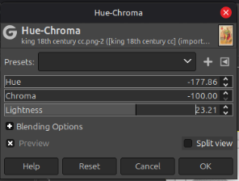
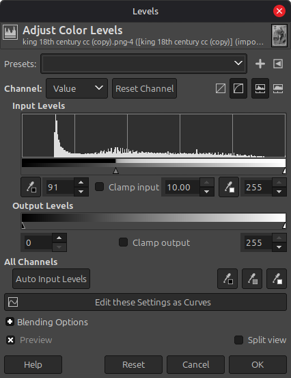
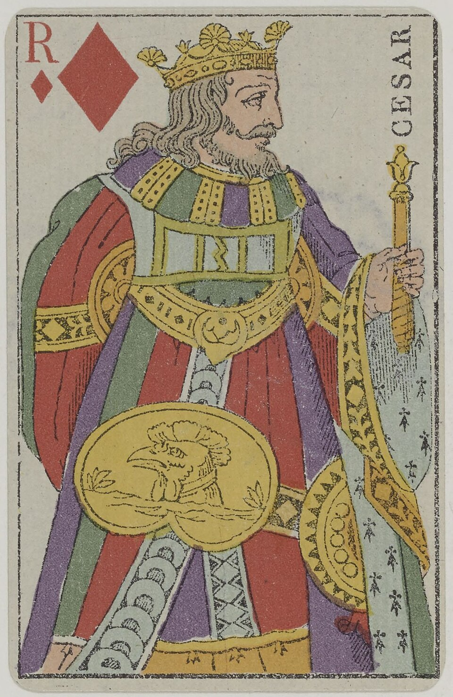
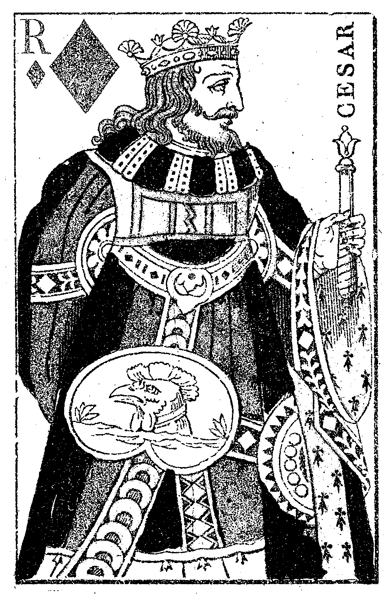
I then printed off my image at the size I would want it on the canvas.
Then proceeded to colour in the image in two colours to represent the light and dark values of the image... I went over it again in orange to clarify the positive values (the parts we want to see) that I will want to remove from the paper to make my stencil (positive and negative values are not necessarily going to be just the lights or just the shadows, it will be a mixture of each to emphasize the important features in the stencil)...
To make it a stencil, remove the positive values from the stencil with an exacto blade (the parts we remove are the parts that will be shown with the spray through the stencil)
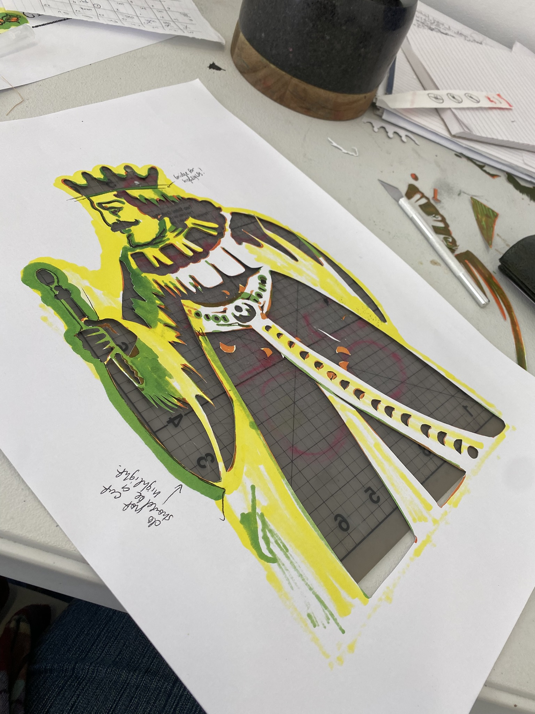
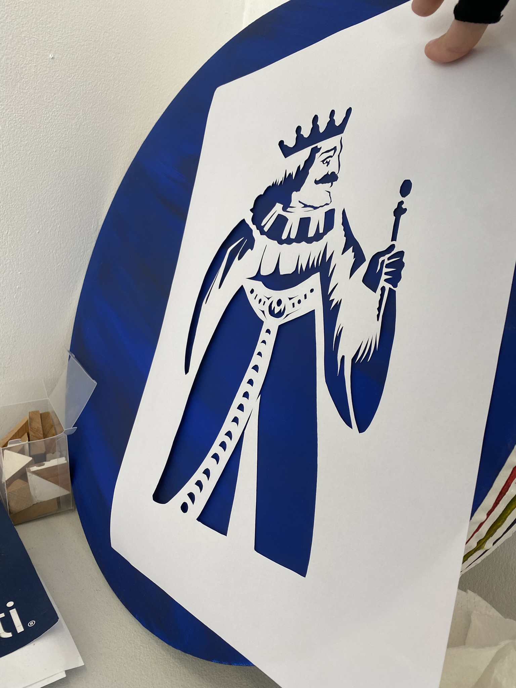
Fishing Rod and Fish
I used my woven fish as a stand-in for a real fish for my source image. To give the fish some weight I put a 1kg dive weight inside of it. I propped up my phone to take a photo of my holding the rod up against a white wall with the fish hooked onto the end of the line.
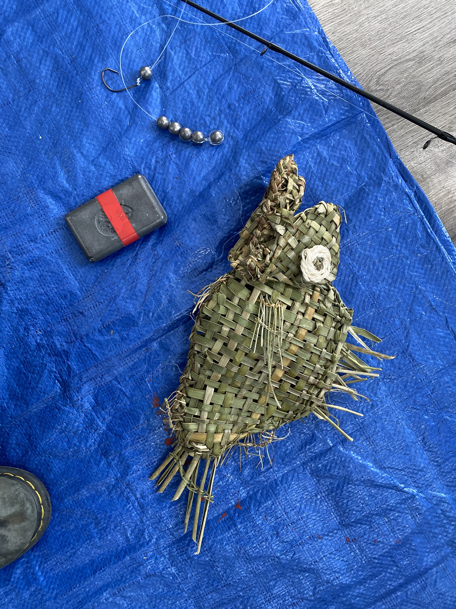
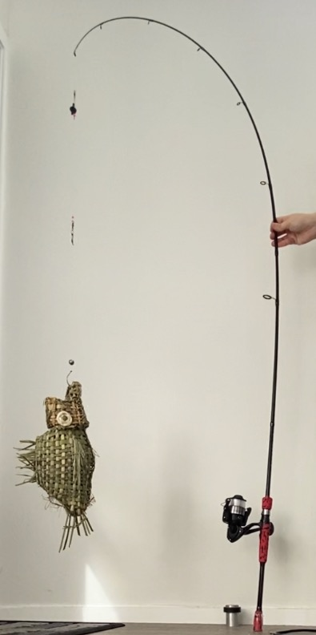
Creating a Stencil
Using the reference image I printed it out A3 and proceeded to us ean exacto blade to cut out all of the dark parts of the stencil (these are all the positive values I want to be present in my stencil)
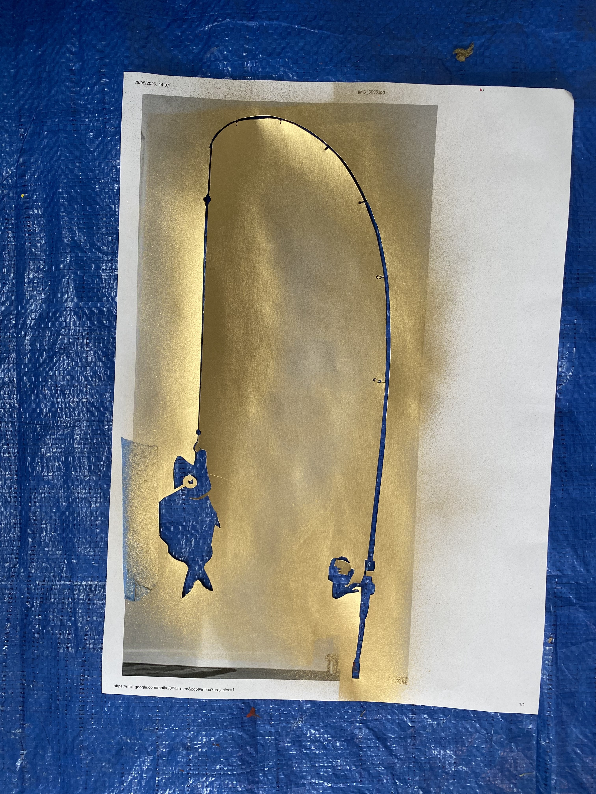
Kingfisher
I use my camera (Nikon Coolpix P950) for birdwatching, I got it specifically because it has a ‘bird-watching mode’, so I just had to use my best kingfisher photo for a reference image. The Kingfisher image I love the most is from up at my grandads farm, it perched on the wheel of one of his vintage tractors and I think its a great photo. Although for the paintings purposes I will be cropping the tractor out to focus on the bird.
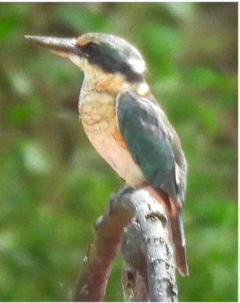
Print at various sizes to have option for what size works best in the painting.
Making The Painting
20inch round pack of 4 canvases I got on sale from warehouse stationary ($10 for 4 canvases! Score) used my random old leftover acrylics to coat them in various colours and combinations. Brushed them to mix the colour enough to be consistent but not enough to be completely homogenous and leaving horizontal lines.
Spray 3 kings (one gold, two black) spray fishing rod (gold) and spray box for kingfisher (white)
Paint kingfisher
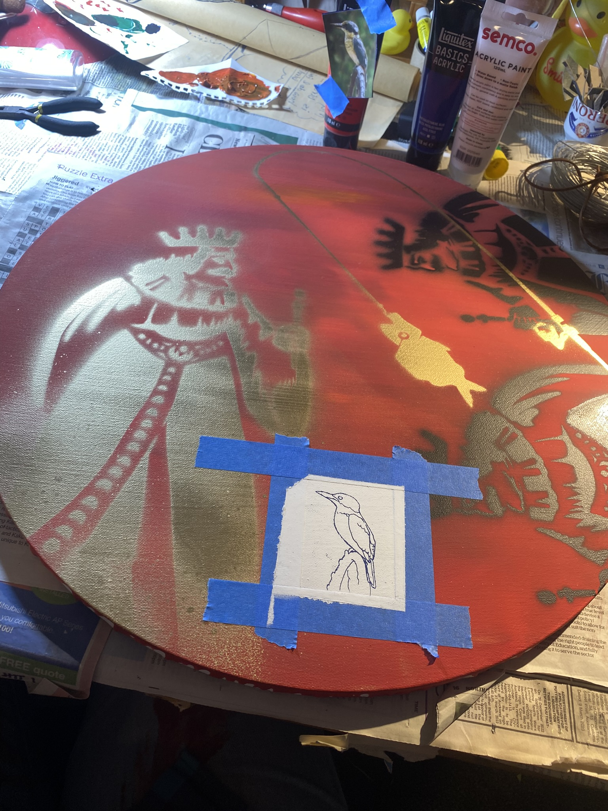
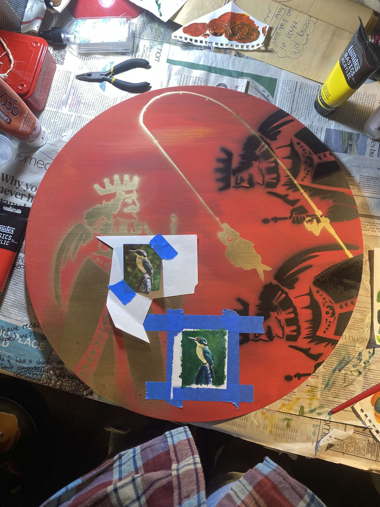
Finish with a clearcoat to protect the paint!
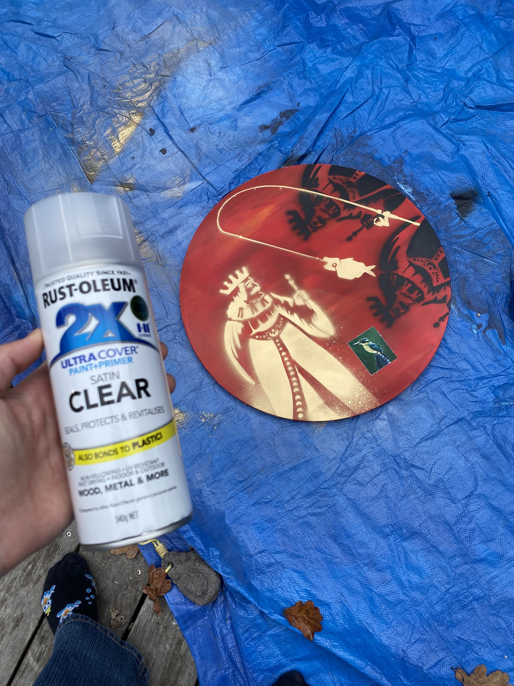
references
(1) https://www.brooksanctuary.org.nz/nature-wildlife/kotare
(2) https://www.doc.govt.nz/nature/native-animals/birds/birds-a-z/kingfisher-kotare/